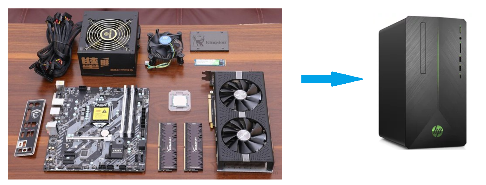

4，创建型模式
4.2 工厂模式
4.2.1 概述
需求：设计一个咖啡店点餐系统。
设计一个咖啡类（Coffee），并定义其两个子类（美式咖啡【AmericanCoffee】和拿铁咖啡【LatteCoffee】）；再设计一个咖啡店类（CoffeeStore），咖啡店具有点咖啡的功能。
具体类的设计如下：

在java中，万物皆对象，这些对象都需要创建，如果创建的时候直接new该对象，就会对该对象耦合严重，假如我们要更换对象，所有new对象的地方都需要修改一遍，这显然违背了软件设计的开闭原则。如果我们使用工厂来生产对象，我们就只和工厂打交道就可以了，彻底和对象解耦，如果要更换对象，直接在工厂里更换该对象即可，达到了与对象解耦的目的；所以说，工厂模式最大的优点就是：解耦。
在本教程中会介绍三种工厂的使用
- 简单工厂模式（不属于GOF的23种经典设计模式）
- 工厂方法模式
- 抽象工厂模式
4.2.2 简单工厂模式
简单工厂不是一种设计模式，反而比较像是一种编程习惯。
4.2.2.1 结构
简单工厂包含如下角色：
- 抽象产品 ：定义了产品的规范，描述了产品的主要特性和功能。
- 具体产品 ：实现或者继承抽象产品的子类
- 具体工厂 ：提供了创建产品的方法，调用者通过该方法来获取产品。
4.2.2.2 实现
现在使用简单工厂对上面案例进行改进，类图如下：

工厂类代码如下：
x1public class SimpleCoffeeFactory {23 public Coffee createCoffee(String type) {4 Coffee coffee = null;5 if("americano".equals(type)) {6 coffee = new AmericanoCoffee();7 } else if("latte".equals(type)) {8 coffee = new LatteCoffee();9 }10 return coffee;11 }12}工厂（factory）处理创建对象的细节，一旦有了SimpleCoffeeFactory，CoffeeStore类中的orderCoffee()就变成此对象的客户，后期如果需要Coffee对象直接从工厂中获取即可。这样也就解除了和Coffee实现类的耦合，同时又产生了新的耦合，CoffeeStore对象和SimpleCoffeeFactory工厂对象的耦合，工厂对象和商品对象的耦合。
后期如果再加新品种的咖啡，我们势必要需求修改SimpleCoffeeFactory的代码，违反了开闭原则。工厂类的客户端可能有很多，比如创建美团外卖等，这样只需要修改工厂类的代码，省去其他的修改操作。
4.2.2.4 优缺点
优点：
封装了创建对象的过程，可以通过参数直接获取对象。把对象的创建和业务逻辑层分开，这样以后就避免了修改客户代码，如果要实现新产品直接修改工厂类，而不需要在原代码中修改，这样就降低了客户代码修改的可能性，更加容易扩展。
缺点：
增加新产品时还是需要修改工厂类的代码，违背了“开闭原则”。
4.2.2.3 扩展
静态工厂
在开发中也有一部分人将工厂类中的创建对象的功能定义为静态的，这个就是静态工厂模式，它也不是23种设计模式中的。代码如下：
xxxxxxxxxx121public class SimpleCoffeeFactory {23 public static Coffee createCoffee(String type) {4 Coffee coffee = null;5 if("americano".equals(type)) {6 coffee = new AmericanoCoffee();7 } else if("latte".equals(type)) {8 coffee = new LatteCoffee();9 }10 return coffe;11 }12}
4.2.3 工厂方法模式
针对上例中的缺点，使用工厂方法模式就可以完美的解决，完全遵循开闭原则。
4.2.3.1 概念
定义一个用于创建对象的接口，让子类决定实例化哪个产品类对象。工厂方法使一个产品类的实例化延迟到其工厂的子类。
4.2.3.2 结构
工厂方法模式的主要角色：
- 抽象工厂（Abstract Factory）：提供了创建产品的接口，调用者通过它访问具体工厂的工厂方法来创建产品。
- 具体工厂（ConcreteFactory）：主要是实现抽象工厂中的抽象方法，完成具体产品的创建。
- 抽象产品（Product）：定义了产品的规范，描述了产品的主要特性和功能。
- 具体产品（ConcreteProduct）：实现了抽象产品角色所定义的接口，由具体工厂来创建，它同具体工厂之间一一对应。
4.2.3.3 实现
使用工厂方法模式对上例进行改进，类图如下：

代码如下：
抽象工厂：
xxxxxxxxxx41public interface CoffeeFactory {23 Coffee createCoffee();4}具体工厂：
xxxxxxxxxx131public class LatteCoffeeFactory implements CoffeeFactory {23 public Coffee createCoffee() {4 return new LatteCoffee();5 }6}78public class AmericanCoffeeFactory implements CoffeeFactory {910 public Coffee createCoffee() {11 return new AmericanCoffee();12 }13}咖啡店类：
xxxxxxxxxx151public class CoffeeStore {23 private CoffeeFactory factory;45 public CoffeeStore(CoffeeFactory factory) {6 this.factory = factory;7 }89 public Coffee orderCoffee(String type) {10 Coffee coffee = factory.createCoffee();11 coffee.addMilk();12 coffee.addsugar();13 return coffee;14 }15}从以上的编写的代码可以看到，要增加产品类时也要相应地增加工厂类，不需要修改工厂类的代码了，这样就解决了简单工厂模式的缺点。
工厂方法模式是简单工厂模式的进一步抽象。由于使用了多态性，工厂方法模式保持了简单工厂模式的优点，而且克服了它的缺点。
4.2.3.4 优缺点
优点：
- 用户只需要知道具体工厂的名称就可得到所要的产品，无须知道产品的具体创建过程；
- 在系统增加新的产品时只需要添加具体产品类和对应的具体工厂类，无须对原工厂进行任何修改，满足开闭原则；
缺点：
- 每增加一个产品就要增加一个具体产品类和一个对应的具体工厂类，这增加了系统的复杂度。
4.2.4 抽象工厂模式
前面介绍的工厂方法模式中考虑的是一类产品的生产，如畜牧场只养动物、电视机厂只生产电视机、传智播客只培养计算机软件专业的学生等。
这些工厂只生产同种类产品，同种类产品称为同等级产品，也就是说：工厂方法模式只考虑生产同等级的产品，但是在现实生活中许多工厂是综合型的工厂，能生产多等级（种类） 的产品，如电器厂既生产电视机又生产洗衣机或空调，大学既有软件专业又有生物专业等。
本节要介绍的抽象工厂模式将考虑多等级产品的生产，将同一个具体工厂所生产的位于不同等级的一组产品称为一个产品族，下图所示横轴是产品等级，也就是同一类产品；纵轴是产品族，也就是同一品牌的产品，同一品牌的产品产自同一个工厂。


4.2.4.1 概念
是一种为访问类提供一个创建一组相关或相互依赖对象的接口，且访问类无须指定所要产品的具体类就能得到同族的不同等级的产品的模式结构。
抽象工厂模式是工厂方法模式的升级版本，工厂方法模式只生产一个等级的产品，而抽象工厂模式可生产多个等级的产品。
4.2.4.2 结构
抽象工厂模式的主要角色如下：
- 抽象工厂（Abstract Factory）：提供了创建产品的接口，它包含多个创建产品的方法，可以创建多个不同等级的产品。
- 具体工厂（Concrete Factory）：主要是实现抽象工厂中的多个抽象方法，完成具体产品的创建。
- 抽象产品（Product）：定义了产品的规范，描述了产品的主要特性和功能，抽象工厂模式有多个抽象产品。
- 具体产品（ConcreteProduct）：实现了抽象产品角色所定义的接口，由具体工厂来创建，它 同具体工厂之间是多对一的关系。
4.2.4.2 实现
现咖啡店业务发生改变，不仅要生产咖啡还要生产甜点，如提拉米苏、抹茶慕斯等，要是按照工厂方法模式，需要定义提拉米苏类、抹茶慕斯类、提拉米苏工厂、抹茶慕斯工厂、甜点工厂类，很容易发生类爆炸情况。其中拿铁咖啡、美式咖啡是一个产品等级，都是咖啡；提拉米苏、抹茶慕斯也是一个产品等级；拿铁咖啡和提拉米苏是同一产品族（也就是都属于意大利风味），美式咖啡和抹茶慕斯是同一产品族（也就是都属于美式风味）。所以这个案例可以使用抽象工厂模式实现。类图如下：

代码如下：
抽象工厂：
xxxxxxxxxx61public interface DessertFactory {23 Coffee createCoffee();45 Dessert createDessert();6}具体工厂：
xxxxxxxxxx221//美式甜点工厂2public class AmericanDessertFactory implements DessertFactory {34 public Coffee createCoffee() {5 return new AmericanCoffee();6 }78 public Dessert createDessert() {9 return new MatchaMousse();10 }11}12//意大利风味甜点工厂13public class ItalyDessertFactory implements DessertFactory {1415 public Coffee createCoffee() {16 return new LatteCoffee();17 }1819 public Dessert createDessert() {20 return new Tiramisu();21 }22}如果要加同一个产品族的话，只需要再加一个对应的工厂类即可，不需要修改其他的类。
4.2.4.3 优缺点
优点：
当一个产品族中的多个对象被设计成一起工作时，它能保证客户端始终只使用同一个产品族中的对象。
缺点：
当产品族中需要增加一个新的产品时，所有的工厂类都需要进行修改。
4.2.4.4 使用场景
- 当需要创建的对象是一系列相互关联或相互依赖的产品族时，如电器工厂中的电视机、洗衣机、空调等。
- 系统中有多个产品族，但每次只使用其中的某一族产品。如有人只喜欢穿某一个品牌的衣服和鞋。
- 系统中提供了产品的类库，且所有产品的接口相同，客户端不依赖产品实例的创建细节和内部结构。
如：输入法换皮肤，一整套一起换。生成不同操作系统的程序。
4.2.5 模式扩展
简单工厂+配置文件解除耦合
可以通过工厂模式+配置文件的方式解除工厂对象和产品对象的耦合。在工厂类中加载配置文件中的全类名，并创建对象进行存储，客户端如果需要对象，直接进行获取即可。
第一步：定义配置文件
为了演示方便，我们使用properties文件作为配置文件，名称为bean.properties
xxxxxxxxxx21american=com.itheima.pattern.factory.config_factory.AmericanCoffee2latte=com.itheima.pattern.factory.config_factory.LatteCoffee第二步：改进工厂类
xxxxxxxxxx291public class CoffeeFactory {23 private static Map<String,Coffee> map = new HashMap();45 static {6 Properties p = new Properties();7 InputStream is = CoffeeFactory.class.getClassLoader().getResourceAsStream("bean.properties");8 try {9 p.load(is);10 //遍历Properties集合对象11 Set<Object> keys = p.keySet();12 for (Object key : keys) {13 //根据键获取值（全类名）14 String className = p.getProperty((String) key);15 //获取字节码对象16 Class clazz = Class.forName(className);17 Coffee obj = (Coffee) clazz.newInstance();18 map.put((String)key,obj);19 }20 } catch (Exception e) {21 e.printStackTrace();22 }23 }2425 public static Coffee createCoffee(String name) {2627 return map.get(name);28 }29}静态成员变量用来存储创建的对象（键存储的是名称，值存储的是对应的对象），而读取配置文件以及创建对象写在静态代码块中，目的就是只需要执行一次。
4.2.6 JDK源码解析-Collection.iterator方法
xxxxxxxxxx161public class Demo {2 public static void main(String[] args) {3 List<String> list = new ArrayList<>();4 list.add("令狐冲");5 list.add("风清扬");6 list.add("任我行");78 //获取迭代器对象9 Iterator<String> it = list.iterator();10 //使用迭代器遍历11 while(it.hasNext()) {12 String ele = it.next();13 System.out.println(ele);14 }15 }16}对上面的代码大家应该很熟，使用迭代器遍历集合，获取集合中的元素。而单列集合获取迭代器的方法就使用到了工厂方法模式。我们看通过类图看看结构：

Collection接口是抽象工厂类，ArrayList是具体的工厂类；Iterator接口是抽象商品类，ArrayList类中的Iter内部类是具体的商品类。在具体的工厂类中iterator()方法创建具体的商品类的对象。
另：
1,DateForamt类中的getInstance()方法使用的是工厂模式；
2,Calendar类中的getInstance()方法使用的是工厂模式；
4.3 原型模式
4.3.1 概述
用一个已经创建的实例作为原型，通过复制该原型对象来创建一个和原型对象相同的新对象。
4.3.2 结构
原型模式包含如下角色：
- 抽象原型类：规定了具体原型对象必须实现的的 clone() 方法。
- 具体原型类：实现抽象原型类的 clone() 方法，它是可被复制的对象。
- 访问类：使用具体原型类中的 clone() 方法来复制新的对象。
接口类图如下：

4.3.3 实现
原型模式的克隆分为浅克隆和深克隆。
浅克隆：创建一个新对象，新对象的属性和原来对象完全相同，对于非基本类型属性，仍指向原有属性所指向的对象的内存地址。
深克隆：创建一个新对象，属性中引用的其他对象也会被克隆，不再指向原有对象地址。
Java中的Object类中提供了 clone() 方法来实现浅克隆。 Cloneable 接口是上面的类图中的抽象原型类，而实现了Cloneable接口的子实现类就是具体的原型类。代码如下：
Realizetype（具体的原型类）：
xxxxxxxxxx121public class Realizetype implements Cloneable {23 public Realizetype() {4 System.out.println("具体的原型对象创建完成！");5 }67 8 protected Realizetype clone() throws CloneNotSupportedException {9 System.out.println("具体原型复制成功！");10 return (Realizetype) super.clone();11 }12}PrototypeTest（测试访问类）：
xxxxxxxxxx81public class PrototypeTest {2 public static void main(String[] args) throws CloneNotSupportedException {3 Realizetype r1 = new Realizetype();4 Realizetype r2 = r1.clone();56 System.out.println("对象r1和r2是同一个对象？" + (r1 == r2));7 }8}4.3.4 案例
用原型模式生成“三好学生”奖状
同一学校的“三好学生”奖状除了获奖人姓名不同，其他都相同，可以使用原型模式复制多个“三好学生”奖状出来，然后在修改奖状上的名字即可。
类图如下：

代码如下：
xxxxxxxxxx371//奖状类2public class Citation implements Cloneable {3 private String name;45 public void setName(String name) {6 this.name = name;7 }89 public String getName() {10 return (this.name);11 }1213 public void show() {14 System.out.println(name + "同学：在2020学年第一学期中表现优秀，被评为三好学生。特发此状！");15 }1617 18 public Citation clone() throws CloneNotSupportedException {19 return (Citation) super.clone();20 }21}2223//测试访问类24public class CitationTest {25 public static void main(String[] args) throws CloneNotSupportedException {26 Citation c1 = new Citation();27 c1.setName("张三");2829 //复制奖状30 Citation c2 = c1.clone();31 //将奖状的名字修改李四32 c2.setName("李四");3334 c1.show();35 c2.show();36 }37}4.3.5 使用场景
- 对象的创建非常复杂，可以使用原型模式快捷的创建对象。
- 性能和安全要求比较高。
4.3.6 扩展（深克隆）
将上面的“三好学生”奖状的案例中Citation类的name属性修改为Student类型的属性。代码如下：
xxxxxxxxxx731//奖状类2public class Citation implements Cloneable {3 private Student stu;45 public Student getStu() {6 return stu;7 }89 public void setStu(Student stu) {10 this.stu = stu;11 }1213 void show() {14 System.out.println(stu.getName() + "同学：在2020学年第一学期中表现优秀，被评为三好学生。特发此状！");15 }1617 18 public Citation clone() throws CloneNotSupportedException {19 return (Citation) super.clone();20 }21}2223//学生类24public class Student {25 private String name;26 private String address;2728 public Student(String name, String address) {29 this.name = name;30 this.address = address;31 }3233 public Student() {34 }3536 public String getName() {37 return name;38 }3940 public void setName(String name) {41 this.name = name;42 }4344 public String getAddress() {45 return address;46 }4748 public void setAddress(String address) {49 this.address = address;50 }51}5253//测试类54public class CitationTest {55 public static void main(String[] args) throws CloneNotSupportedException {5657 Citation c1 = new Citation();58 Student stu = new Student("张三", "西安");59 c1.setStu(stu);6061 //复制奖状62 Citation c2 = c1.clone();63 //获取c2奖状所属学生对象64 Student stu1 = c2.getStu();65 stu1.setName("李四");6667 //判断stu对象和stu1对象是否是同一个对象68 System.out.println("stu和stu1是同一个对象？" + (stu == stu1));6970 c1.show();71 c2.show();72 }73}运行结果为：

说明：
stu对象和stu1对象是同一个对象，就会产生将stu1对象中name属性值改为“李四”，两个Citation（奖状）对象中显示的都是李四。这就是浅克隆的效果，对具体原型类（Citation）中的引用类型的属性进行引用的复制。这种情况需要使用深克隆，而进行深克隆需要使用对象流。代码如下：
xxxxxxxxxx271public class CitationTest1 {2 public static void main(String[] args) throws Exception {3 Citation c1 = new Citation();4 Student stu = new Student("张三", "西安");5 c1.setStu(stu);67 //创建对象输出流对象8 ObjectOutputStream oos = new ObjectOutputStream(new FileOutputStream("C:\\Users\\Think\\Desktop\\b.txt"));9 //将c1对象写出到文件中10 oos.writeObject(c1);11 oos.close();1213 //创建对象出入流对象14 ObjectInputStream ois = new ObjectInputStream(new FileInputStream("C:\\Users\\Think\\Desktop\\b.txt"));15 //读取对象16 Citation c2 = (Citation) ois.readObject();17 //获取c2奖状所属学生对象18 Student stu1 = c2.getStu();19 stu1.setName("李四");2021 //判断stu对象和stu1对象是否是同一个对象22 System.out.println("stu和stu1是同一个对象？" + (stu == stu1));2324 c1.show();25 c2.show();26 }27}运行结果为：

注意：Citation类和Student类必须实现Serializable接口，否则会抛NotSerializableException异常。
4.5 建造者模式
4.4.1 概述
将一个复杂对象的构建与表示分离，使得同样的构建过程可以创建不同的表示。

- 分离了部件的构造(由Builder来负责)和装配(由Director负责)。 从而可以构造出复杂的对象。这个模式适用于：某个对象的构建过程复杂的情况。
- 由于实现了构建和装配的解耦。不同的构建器，相同的装配，也可以做出不同的对象；相同的构建器，不同的装配顺序也可以做出不同的对象。也就是实现了构建算法、装配算法的解耦，实现了更好的复用。
- 建造者模式可以将部件和其组装过程分开，一步一步创建一个复杂的对象。用户只需要指定复杂对象的类型就可以得到该对象，而无须知道其内部的具体构造细节。
4.4.2 结构
建造者（Builder）模式包含如下角色：
- 抽象建造者类（Builder）：这个接口规定要实现复杂对象的那些部分的创建，并不涉及具体的部件对象的创建。
- 具体建造者类（ConcreteBuilder）：实现 Builder 接口，完成复杂产品的各个部件的具体创建方法。在构造过程完成后，提供产品的实例。
- 产品类（Product）：要创建的复杂对象。
- 指挥者类（Director）：调用具体建造者来创建复杂对象的各个部分，在指导者中不涉及具体产品的信息，只负责保证对象各部分完整创建或按某种顺序创建。
类图如下：

4.4.3 实例
创建共享单车
生产自行车是一个复杂的过程，它包含了车架，车座等组件的生产。而车架又有碳纤维，铝合金等材质的，车座有橡胶，真皮等材质。对于自行车的生产就可以使用建造者模式。
这里Bike是产品，包含车架，车座等组件；Builder是抽象建造者，MobikeBuilder和OfoBuilder是具体的建造者；Director是指挥者。类图如下：

具体的代码如下：
xxxxxxxxxx981//自行车类2public class Bike {3 private String frame;4 private String seat;56 public String getFrame() {7 return frame;8 }910 public void setFrame(String frame) {11 this.frame = frame;12 }1314 public String getSeat() {15 return seat;16 }1718 public void setSeat(String seat) {19 this.seat = seat;20 }21}2223// 抽象 builder 类24public abstract class Builder {2526 protected Bike mBike = new Bike();2728 public abstract void buildFrame();29 public abstract void buildSeat();30 public abstract Bike createBike();31}3233//摩拜单车Builder类34public class MobikeBuilder extends Builder {3536 37 public void buildFrame() {38 mBike.setFrame("铝合金车架");39 }4041 42 public void buildSeat() {43 mBike.setSeat("真皮车座");44 }4546 47 public Bike createBike() {48 return mBike;49 }50}5152//ofo单车Builder类53public class OfoBuilder extends Builder {5455 56 public void buildFrame() {57 mBike.setFrame("碳纤维车架");58 }5960 61 public void buildSeat() {62 mBike.setSeat("橡胶车座");63 }6465 66 public Bike createBike() {67 return mBike;68 }69}7071//指挥者类72public class Director {73 private Builder mBuilder;7475 public Director(Builder builder) {76 mBuilder = builder;77 }7879 public Bike construct() {80 mBuilder.buildFrame();81 mBuilder.buildSeat();82 return mBuilder.createBike();83 }84}8586//测试类87public class Client {88 public static void main(String[] args) {89 showBike(new OfoBuilder());90 showBike(new MobikeBuilder());91 }92 private static void showBike(Builder builder) {93 Director director = new Director(builder);94 Bike bike = director.construct();95 System.out.println(bike.getFrame());96 System.out.println(bike.getSeat());97 }98}注意：
上面示例是 Builder模式的常规用法，指挥者类 Director 在建造者模式中具有很重要的作用，它用于指导具体构建者如何构建产品，控制调用先后次序，并向调用者返回完整的产品类，但是有些情况下需要简化系统结构，可以把指挥者类和抽象建造者进行结合
xxxxxxxxxx151// 抽象 builder 类2public abstract class Builder {34 protected Bike mBike = new Bike();56 public abstract void buildFrame();7 public abstract void buildSeat();8 public abstract Bike createBike();9 10 public Bike construct() {11 this.buildFrame();12 this.BuildSeat();13 return this.createBike();14 }15}说明：
这样做确实简化了系统结构，但同时也加重了抽象建造者类的职责，也不是太符合单一职责原则，如果construct() 过于复杂，建议还是封装到 Director 中。
4.4.4 优缺点
优点：
- 建造者模式的封装性很好。使用建造者模式可以有效的封装变化，在使用建造者模式的场景中，一般产品类和建造者类是比较稳定的，因此，将主要的业务逻辑封装在指挥者类中对整体而言可以取得比较好的稳定性。
- 在建造者模式中，客户端不必知道产品内部组成的细节，将产品本身与产品的创建过程解耦，使得相同的创建过程可以创建不同的产品对象。
- 可以更加精细地控制产品的创建过程 。将复杂产品的创建步骤分解在不同的方法中，使得创建过程更加清晰，也更方便使用程序来控制创建过程。
- 建造者模式很容易进行扩展。如果有新的需求，通过实现一个新的建造者类就可以完成，基本上不用修改之前已经测试通过的代码，因此也就不会对原有功能引入风险。符合开闭原则。
缺点：
造者模式所创建的产品一般具有较多的共同点，其组成部分相似，如果产品之间的差异性很大，则不适合使用建造者模式，因此其使用范围受到一定的限制。
4.4.5 使用场景
建造者（Builder）模式创建的是复杂对象，其产品的各个部分经常面临着剧烈的变化，但将它们组合在一起的算法却相对稳定，所以它通常在以下场合使用。
- 创建的对象较复杂，由多个部件构成，各部件面临着复杂的变化，但构件间的建造顺序是稳定的。
- 创建复杂对象的算法独立于该对象的组成部分以及它们的装配方式，即产品的构建过程和最终的表示是独立的。
4.4.6 模式扩展
建造者模式除了上面的用途外，在开发中还有一个常用的使用方式，就是当一个类构造器需要传入很多参数时，如果创建这个类的实例，代码可读性会非常差，而且很容易引入错误，此时就可以利用建造者模式进行重构。
重构前代码如下：
xxxxxxxxxx631public class Phone {2 private String cpu;3 private String screen;4 private String memory;5 private String mainboard;67 public Phone(String cpu, String screen, String memory, String mainboard) {8 this.cpu = cpu;9 this.screen = screen;10 this.memory = memory;11 this.mainboard = mainboard;12 }1314 public String getCpu() {15 return cpu;16 }1718 public void setCpu(String cpu) {19 this.cpu = cpu;20 }2122 public String getScreen() {23 return screen;24 }2526 public void setScreen(String screen) {27 this.screen = screen;28 }2930 public String getMemory() {31 return memory;32 }3334 public void setMemory(String memory) {35 this.memory = memory;36 }3738 public String getMainboard() {39 return mainboard;40 }4142 public void setMainboard(String mainboard) {43 this.mainboard = mainboard;44 }4546 47 public String toString() {48 return "Phone{" +49 "cpu='" + cpu + '\'' +50 ", screen='" + screen + '\'' +51 ", memory='" + memory + '\'' +52 ", mainboard='" + mainboard + '\'' +53 '}';54 }55}5657public class Client {58 public static void main(String[] args) {59 //构建Phone对象60 Phone phone = new Phone("intel","三星屏幕","金士顿","华硕");61 System.out.println(phone);62 }63}上面在客户端代码中构建Phone对象，传递了四个参数，如果参数更多呢？代码的可读性及使用的成本就是比较高。
重构后代码：
xxxxxxxxxx631public class Phone {23 private String cpu;4 private String screen;5 private String memory;6 private String mainboard;78 private Phone(Builder builder) {9 cpu = builder.cpu;10 screen = builder.screen;11 memory = builder.memory;12 mainboard = builder.mainboard;13 }1415 public static final class Builder {16 private String cpu;17 private String screen;18 private String memory;19 private String mainboard;2021 public Builder() {}2223 public Builder cpu(String val) {24 cpu = val;25 return this;26 }27 public Builder screen(String val) {28 screen = val;29 return this;30 }31 public Builder memory(String val) {32 memory = val;33 return this;34 }35 public Builder mainboard(String val) {36 mainboard = val;37 return this;38 }39 public Phone build() {40 return new Phone(this);}41 }42 43 public String toString() {44 return "Phone{" +45 "cpu='" + cpu + '\'' +46 ", screen='" + screen + '\'' +47 ", memory='" + memory + '\'' +48 ", mainboard='" + mainboard + '\'' +49 '}';50 }51}5253public class Client {54 public static void main(String[] args) {55 Phone phone = new Phone.Builder()56 .cpu("intel")57 .mainboard("华硕")58 .memory("金士顿")59 .screen("三星")60 .build();61 System.out.println(phone);62 }63}重构后的代码在使用起来更方便，某种程度上也可以提高开发效率。从软件设计上，对程序员的要求比较高。
4.6 创建者模式对比
4.6.1 工厂方法模式VS建造者模式
工厂方法模式注重的是整体对象的创建方式；而建造者模式注重的是部件构建的过程，意在通过一步一步地精确构造创建出一个复杂的对象。
我们举个简单例子来说明两者的差异，如要制造一个超人，如果使用工厂方法模式，直接产生出来的就是一个力大无穷、能够飞翔、内裤外穿的超人；而如果使用建造者模式，则需要组装手、头、脚、躯干等部分，然后再把内裤外穿，于是一个超人就诞生了。
4.6.2 抽象工厂模式VS建造者模式
抽象工厂模式实现对产品家族的创建，一个产品家族是这样的一系列产品：具有不同分类维度的产品组合，采用抽象工厂模式则是不需要关心构建过程，只关心什么产品由什么工厂生产即可。
建造者模式则是要求按照指定的蓝图建造产品，它的主要目的是通过组装零配件而产生一个新产品。
如果将抽象工厂模式看成汽车配件生产工厂，生产一个产品族的产品，那么建造者模式就是一个汽车组装工厂，通过对部件的组装可以返回一辆完整的汽车。